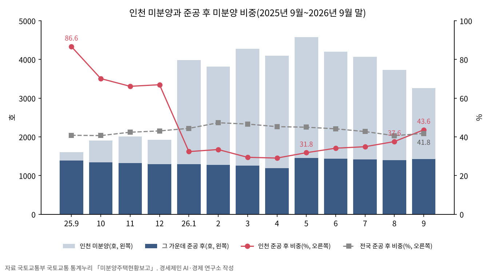
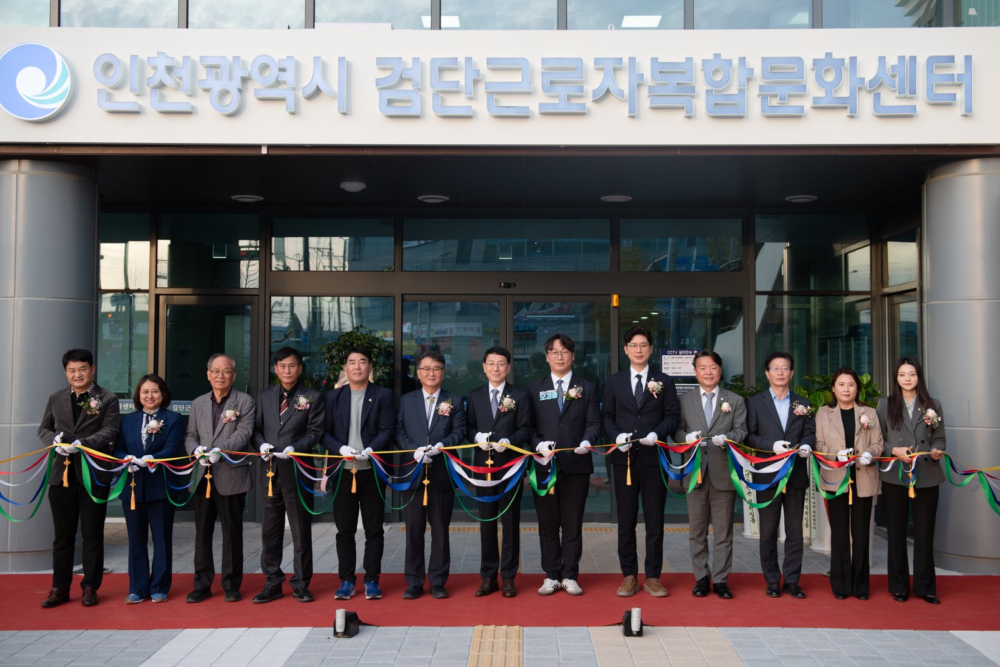
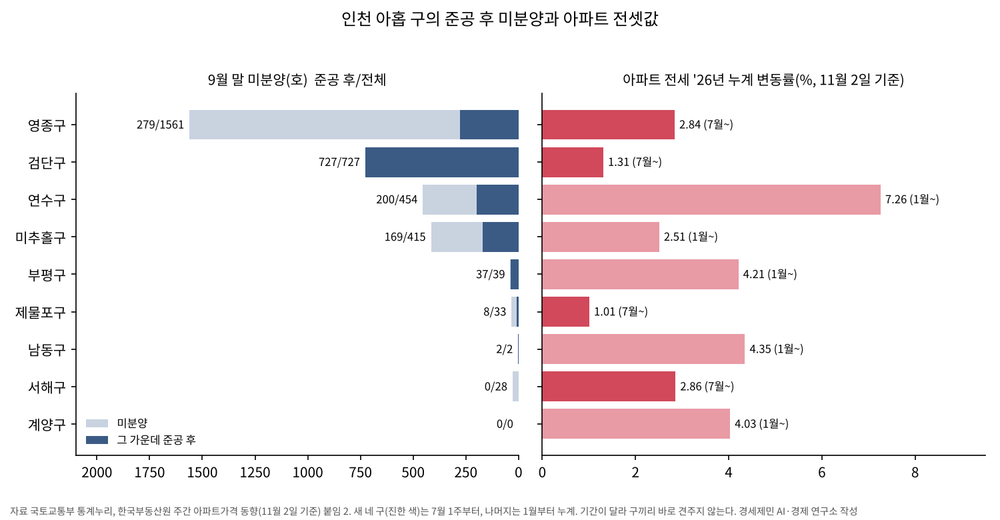
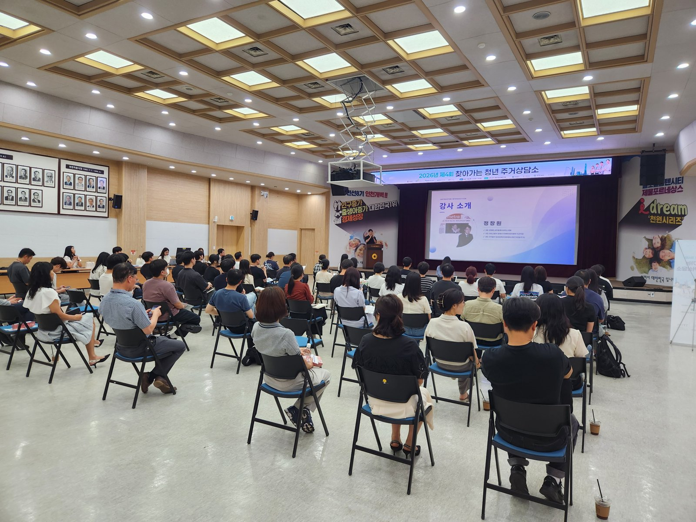
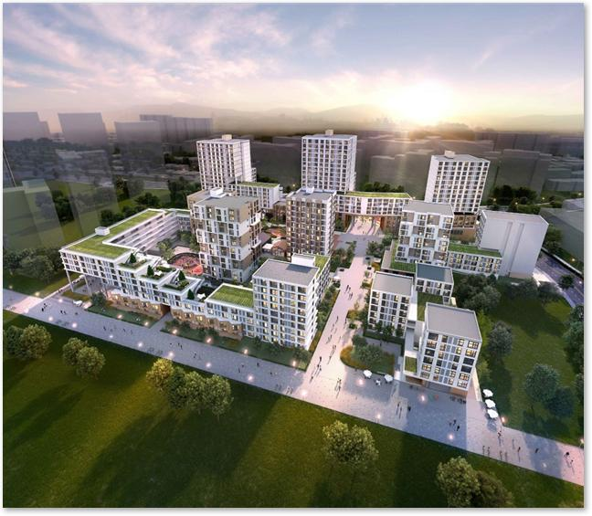

[부동산 브리핑] 검단의 새집 727호는 비어 있는데 전셋값은 오른다
인천 미분양 한 달 새 470호 줄고 준공 후는 21호 늘어
검단구 미분양 727호는 모두 다 지은 집
정부 매입은 수도권 제외, 검단 전셋값은 한 주 0.23% 올라
AI경제저널=김갑봉 기자 | 국토교통부가 10월 30일 9월 주택통계를 냈다. 국내 미분양 주택은 6만5941호로, 8월 6만9134호보다 4.6% 적다. 공사를 마치고도 팔리지 않은 준공 후 미분양은 2만7549호다. 한 달 새 1.9% 줄었다.
인천은 두 숫자가 엇갈린다. 미분양은 나라 전체보다 빨리 줄었는데, 다 짓고도 팔리지 않은 새집은 거꾸로 늘었다.
경세제민 AI·경제 연구소는 국토교통 통계누리의 군·구별 미분양 표와 한국부동산원 주간 전셋값을 같은 동네 단위로 겹쳤다. 팔리지 않은 새집이 몰린 동네에서 세입자가 받아 든 숫자를 두 통계로 짚는다.
470호 줄고, 준공 후는 21호 늘어
인천에서 9월 말까지 팔리지 않고 남은 주택은 3259호다. 8월 말 3729호에서 열 채에 한 채 넘게 줄었다. 준공 후 미분양만 떼어 보면 같은 기간 1401호에서 1422호로 늘었다.
줄어든 몫은 아직 짓고 있는 집에서 나왔다. 준공 전 미분양이 2328호에서 1837호로 491호 줄었다. 준공 후 미분양이 21호 늘어 전체로는 470호가 줄었다. 나라 전체 준공 후 미분양이 한 달 새 1.9% 줄 때 인천은 1.5% 늘었다.
미분양 가운데 준공 후 비중은 한 달 전 37.6%에서 43.6%로 6.0%포인트 올랐다. 나라 전체 41.8%보다 높다. 같은 달 서울은 68.6%, 경기는 17.2%다.
이 비중은 1년 새 크게 출렁였다. 지난해 9월 인천은 86.6%였고, 올해 1월에는 32.4%로 떨어졌다. 1월은 옛 중구 미분양이 한 달 새 33호에서 1683호로 늘어난 달이다.
1년 새 인천 미분양 전체는 1607호에서 3259호로 늘었다. 같은 기간 준공 후 미분양은 1392호에서 1422호로 30호 늘었다. 올해 1월부터 9월까지는 1190호에서 1455호 사이를 오갔다.

검단, 미분양 727호 모두 준공 후
검단구의 9월 말 미분양은 727호다. 727호 모두 준공 후 미분양이다. 인천 준공 후 미분양 1422호 가운데 51.1%가 검단구에 있다.
인천의 준공 후 미분양은 검단구 다음으로 영종구 279호, 연수구 200호, 미추홀구 169호 순이다.
7월 1일 검단구가 생긴 뒤 이 구의 준공 후 미분양은 7월 741호, 8월 737호, 9월 727호다. 석 달 동안 14호, 한 달에 다섯 호 안팎씩 줄었다.
검단구와 서해구가 나뉘기 전 서구의 준공 후 미분양은 지난해 9월 1040호였다. 12월 979호, 올해 3월 950호, 6월 750호로 줄었다. 7월 둘로 나뉜 뒤 서해구는 0호, 검단구는 741호다.
옛 서구와 검단구는 경계가 달라 두 기록을 한 줄로 이어 셈하지 않는다.
미분양 전체로는 영종구가 1561호로 가장 많다. 이 가운데 1282호는 아직 짓는 중이고, 준공 후는 279호다.

그 동네 전셋값, 한 주 0.23%
한국부동산원이 11월 5일 낸 11월 2일 기준 주간 동향에서 인천 아파트 전셋값은 한 주 0.10% 올랐다. 인천에서 가장 많이 오른 곳은 0.23%인 검단구와 영종구다. 연수구와 계양구가 0.17%로 뒤를 잇는다. 같은 주 나라 전체 아파트 전셋값은 0.10%, 서울은 0.17% 올랐다.
부동산원은 검단구 원당·마전동과 영종구 운서·운남동 대단지에서 전셋값이 올랐다고 적었다. 같은 주 매매가격 변동률은 검단구 -0.09%, 영종구 -0.07%다.
7월 첫 주부터 11월 2일 기준 주까지 누계 전세 변동률은 검단구 1.31%, 영종구 2.84%다. 매매는 검단구 0.18%, 영종구 -0.22%다.
미분양이 가장 많은 두 구에서 매매가격은 0% 안팎에 머물고, 전셋값은 오른다.
서해구는 준공 후 미분양이 0호인데, 같은 기간 전세 변동률이 2.86%다. 인천 전체로 1월부터 센 누계는 전세 4.71%, 매매 0.75%다.
미분양이 전셋값을 끌어올리는지 누르는지는 구 아홉 곳의 한 해 숫자로 판가름 나지 않는다. 연구소는 이 글에서 두 통계를 같은 동네 단위로 맞대 보는 데 그친다.


논문 둘, 준공 후는 더디게 준다
이의준·김경민(2011)은 2001~2009년 수도권 66개 시·군·구 패널자료로 준공 전과 준공 후 미분양을 나눠 분석했다.
논문은 준공 후 미분양을 「주택공실의 한 부분」으로 본다.
전년도 미분양이 올해 미분양에 주는 계수는 준공 전이 -0.3~-0.6, 준공 후가 대체로 -0.11~-0.24였다. 저자들은 준공 전 미분양의 조절 속도가 더 빠르다고 풀었다.
인천 9월 한 달 숫자에서도 준공 전 미분양은 491호 줄고, 준공 후 미분양은 21호 늘었다.
논문은 디파스퀘일·위튼·콜웰 사분면 모형을 빌려, 미분양이 쌓이면 임대료와 가격이 내린다고 설명한다. 검단과 영종에서는 미분양이 쌓인 채 전셋값이 오른다.
같은 해에도 준공 전 미분양과 준공 후 미분양이 몰린 지역은 달랐다. 저자들은 그래서 결론에서 수도권 전체를 아우르는 정책보다 「지역적인 차원의 정책」이 필요하다고 적었다.
매매가격과 전세가격의 관계를 다룬 전해정(2017)도 미분양을 변수로 넣었다. 서울·인천·경기 8년 치 자료로 낸 추정에서 미분양 주택이 1% 늘면 매매가격은 0.014% 내린다.
이 논문의 추정 결과표에서 미분양은 매매가격 식에만 들어 있다. 전세가격 식에는 매매가격과 실업률만 있다. 두 논문의 추정식 어디에도 미분양과 전셋값을 한 식에 묶은 항은 없다.
매입은 지방만, 공공임대는 2031년
정부는 4월 10일 「지방 준공 후 미분양 아파트 3차 매입공고」를 냈다. 국토교통부와 한국토지주택공사(LH)가 5천호를 사들인다. 매입지역은 「수도권을 제외한 지방권 전체」다.
인천은 수도권이어서 검단구의 준공 후 미분양 727호는 이 매입의 대상이 아니다. 2025년 8월 2차 공고도 매입지역이 같았다.
대상은 전용면적 50~85㎡, 단지별 20호 이상 아파트다. 매입가격은 감정가격에 90%±조정률(±4%포인트)을 곱한 LH 산정가격 이하에서 정한다.
정부는 매입 목적을 지방 노동자 주거지원과 지방 건설경기 회복으로 밝혔다. 사들인 미분양을 광주 GGM 노동자 사례처럼 지방 노동자 공공임대로 쓰는 방식을 모든 시·도로 넓히겠다고 했다.
검단에는 새 공공임대가 예정돼 있다.
인천시는 7월 1일 검단신도시 AA7블록 통합공공임대주택 1006호 가운데 80호를 육아친화 특화주택으로 짓는다고 밝혔다. 2028년 하반기 착공, 2031년 준공·입주가 목표다.

지금 검단구에서 다 짓고도 팔리지 않은 집은 727호다. 정부 매입 대상에서는 빠졌고, 같은 신도시 공공임대 1006호의 입주 목표는 2031년이다. 그 사이 검단구 아파트 전셋값은 7월 첫 주부터 1.31% 올랐다. 11월 첫 주 한 주 상승률은 0.23%다.
참고문헌
- 이의준·김경민, 「준공 전 또는 준공 후 미분양에 영향을 미치는 요인과 차이점: 수도권 시·군·구를 중심으로」, 『국토연구』 제70권, 국토연구원, 2011년 9월, 95-110쪽, https://www.kci.go.kr/kciportal/ci/sereArticleSearch/ciSereArtiView.kci?sereArticleSearchBean.artiId=ART001588424
- 전해정, 「주택 매매, 전세가격 간의 영향력에 관한 연구 — 패널 연립방정식을 이용하여」, 『부동산학보』 제71집, 한국부동산학회, 2017년 12월, 232-243쪽, http://www.reacademy.org/rboard/data/krea2_new/71_17.pdf
- 국토교통부 주택정책과, 「2026년 9월 주택통계」, 2026년 10월 30일, KDI 경제교육·정보센터 경제정책자료, https://eiec.kdi.re.kr/policy/materialView.do?num=288812
- 국토교통부 주거복지지원과, 「지방 준공 후 미분양 아파트 5천호 매입 추진」, 2026년 4월 10일, KDI 경제교육·정보센터 경제정책자료, https://eiec.kdi.re.kr/policy/materialView.do?num=279302
- 국토교통부, 국토교통 통계누리 「미분양주택현황보고」 시·군·구별 미분양현황·공사완료후 미분양현황(2025년 9월~2026년 9월), https://stat.molit.go.kr/portal/cate/statView.do?hRsId=32&hFormId=2082
- 한국부동산원, 「전국주택가격동향조사: 2026년 11월 1주 주간 아파트가격 동향」(11월 2일 기준), 2026년 11월 5일, https://www.reb.or.kr/reb/na/ntt/selectNttInfo.do?mi=9565&bbsId=1154&nttSn=118118
- 인천광역시 노동정책과, 「인천시, ‘검단 근로자복합문화센터’ 개관, 서북부 문화·복지 거점 마련」, 2026년 11월 4일, https://www.incheon.go.kr/IC010205/view?repSeq=DOM_0000000015896307
- 인천광역시 주택정책과, 「인천시, 주거‧돌봄 연계한 ‘육아친화 특화주택’ 공모에 검단AA7블록 선정돼」, 2026년 7월 1일, https://www.incheon.go.kr/IC010205/view?repSeq=DOM_0000000015047612
- 인천광역시 청년정책담당관, 「인천시, 「찾아가는 청년주거 상담소」 성황리에 개최」, 2026년 6월 19일, https://www.incheon.go.kr/IC010205/view?repSeq=DOM_0000000014979400
[사진 출처]
- [사진 1] 인천광역시 보도자료 2026년 11월 4일 「현장사진」(공공누리 제1유형 출처표시), 위 노동정책과 보도
- [사진 2] 인천광역시 보도자료 2026년 6월 19일 「관련 사진」(공공누리 제1유형 출처표시), 위 청년정책담당관 보도
- [사진 3] 인천광역시 보도자료 2026년 7월 1일 「조감도」(공공누리 제1유형 출처표시), 위 주택정책과 보도
※ 이 기사는 AI 프로그램 클로드를 활용해 작성했습니다.
관련기사
- [도시계획·부동산] 인천 아홉 구를 같은 16주로 다시 셌다, 세입자 부담은 영종·계양·연수가 컸다
- [도시계획·부동산] 인천 재개발 14곳 원문을 열었다, 9곳이 에너지 성능으로 용적률을 샀다
- [주택공급 브리핑①] 수도권 착공 목표 26만8000호, 정부 전망도 최대 5만호 미달
- 노후계획도시 선도지구, 분담금은 용적률 두 구간에서 갈린다
저작권자 © AI경제저널 무단전재 및 재배포, AI학습 및 활용 금지